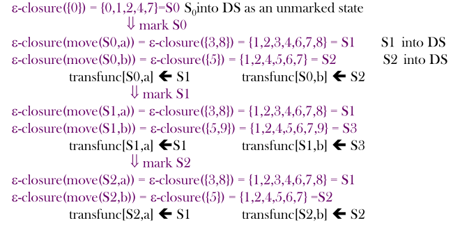

编译原理｜词法分析-2
Lexical Analysis 词法分析-2
词法单元的识别
- 上表总结了词法分析器的目标。对于各个词素或词素的集合，该表显示了应该将哪个词法单元名返回给语法分析器，以及应该返回什么属性值
状态转换图（transition diagram）
- 作为构造词法分析器的一个中间步骤，我们首先将 模式 转换成具有特定风格的流图，称为 状态转换图
- 在读取字符时，使用相关的 TDs 尝试将词素与模式匹配
- 每个状态转移图都有：
- States（状态） : 由圆圈代表
- 词法分析器在扫描输入串的过程中寻找和某个模式匹配的词素，而转换图中的每个状态代表一个可能在这个过程中出现的情况
- Actions（动作） : 从图的一个状态指向另一个状态的箭头
- Start State（开始状态） : 该状态由一条没有出发结点的、标号为“start”的边指明
- Final State（接受状态或最终状态） : 用双层的圈来表示一个接受状态
- States（状态） : 由圆圈代表
保留字和标识符的识别
- 初始化时就将各个保留字填入符号表中。符号表条目的某个字段会指明这些串并不是普通的标识符，并指出它们所代表的词法单元。
- 当找到一个标识符时，如果该标识符尚未出现在符号表中，就会调用 installID 将此标识符放入符号表中，并返回一个指针，指向这个刚找到的词素所对应的符号表条目
- 函数 getToken 查看对应于刚找到的词素的符号表条目，并根据符号表中的信息返回该词素所代表的词法单元名
有穷自动机(finite automata)
-
有穷自动机在本质上是与状态转换图类似的图，但有如下几点不同：
- 有穷自动机是识别器（recognizer），它们只能对每个可能的输入串简单地回答“是”或“否”。
- 有穷自动机分为两类：
- 不确定的有穷自动机（Nondeterministic Finite Automata，NFA） 对其边上的标号没有任何限制。一个符号标记离开同一状态的多条边，并且空串∈也可以作为标号
- 对于每个状态及自动机输入字母表中的每个符号，确定的有穷自动机（Deterministic Finite Automata，DFA） 有且只有
一条离开该状态、以该符号为标号的边
- 确定性和非确定性有限自动机都能识别正则集。
- DFA 识别速度更快，但需要占用更多的空间
- NFA 的识别速度可能稍慢（需要回溯），但是占用空间更小
-
首先要为词法单元定义正则表达式，再将其转换为 DFA 以获取词法单元的词法分析器
NFA
-
一个不确定的有穷自动机（NFA）是一个数学模型，它由以下几个部分组成：
- 一个有穷的状态集合 S
- 一个输入符号集合 Σ，即输入字母表（input alphabet）
- 一个转换函数（transition function），它为每个状态和
Σ∪{∈}中的每个符号都给出了相应的后继状态（next state） 的集合 - S 中的一个状态 s0 被指定为开始状态，或者说初始状态
- S 的一个子集 F 被指定为接受状态（或者说终止状态的）集合
-
在 NFA 中允许空转移(- transitions) ，可以在不使用任何符号的情况下从一个状态移动到另一个状态。
-
一个 NFA 接受（accept） 输入字符串 x，当且仅当对应的转换图中存在一条从开始状态到某个接受状态的路径，使得
该路径中各条边上的标号组成符号串 x- 注意，路径中的∈标号将被忽略
- 由一个 NFA 定义（或接受）的语言是从开始状态到某个接受状态的所有路径上的标号串的集合
转换表
- 为了计算机存储、理解方便，可以将一个NFA表示为一张转换表（transition table）
- 表的各行对应于状态
- 各列对应于输入符号和 ∈
- 对应于一个给定状态和给定输入的条目是将NFA的转换函数应用于这些参数后得到的值
- 如果转换函数没有给出对应于某个 状态-输入 对的信息，我们就把 Ø 放入相应的表项中
- 注意：需要标明 开始/结束 状态
DFA
- 确定的有穷自动机（DFA） 是不确定有穷自动机的一个特例，其中：
- 没有输入 ∈ 之上的转换动作
- 对每个状态 s 和每个输入符号 a，
有且只有一条标号为 a 的边离开 s
- NFA 抽象地表示了用来识别某个语言中的串的算法，而相应的 DFA 则是一个简单具体的识别串的算法。
从正则表达式到自动机
从 NFA 到 DFA 的转换
-
子集构造法的基本思想是让构造得到的DFA的每个状态对应于 NFA 的一个状态集合
- 消除空转移
- 在单个输入字符上从一个状态进行多次转换
-
子集构造法算法：
- 输入：一个 NFA, N
- 输出：一个 DFA, D
- 方法：为D构造一个转换表 Dtran，D 的每个状态是一
个 NFA 状态集合。构造的 Dtran 使得 D “并行地”模拟 N 在遇到一个给定输入串时可能执行的所有动作
- D 的开始状态是 ∈-closure（s0）
- D 的接受状态是所有至少包含了 N 的一个接受状态的状态集合
- 只需要说明如何对NFA的任何状态集合 T 计算 ∈-closure（T） ，就可以完整地描述子集构造法
子集构造法示例
- 下图为接受语言 的 NFA
- 等价 NFA 的开始状态 S0 是∈-closure（0），即 S0={0，1，2，4，7}
- 能够从状态 0 出发，只经过标号为∈的路径到达的所有状态
- NFA的输入字母表是 {a，b}，因此我们标记 S0，计算：
- Dtran［S0，a］= ∈-closure(move(S0,a)) = ∈-closure({3,8}) = {1,2,3,4,6,7,8} = S1
- Dtran［S0，b］= ∈-closure(move(S0,b)) = ∈-closure({5}) = {1,2,4,5,6,7} = S2
- 之后对未加标记的 S1 和 S2 继续这个处理过程，最终就能使得 DFA 的所有状态都被加上标记

练习
3-1
-
开始状态 S0 = ∈-closure({0}) = {0}
-
标记 S0：
- Dtran［S0，a］= ∈-closure(move(S0,a)) = ∈-closure({1}) = {1,2,3,5,8} = S1
- Dtran［S0，b］= ∈-closure(move(S0,b)) = ∈-closure(∈) = {∈}
-
标记 S1：
- Dtran［S1，a］= ∈-closure(move(S1,a)) = ∈-closure({4}) = {2,3,4,5,7,8} = S2
- Dtran［S1，b］= ∈-closure(move(S1,b)) = ∈-closure({6,9}) = {2,3,5,6,7,8,9} = S3
-
标记 S2：
- Dtran［S2，a］= ∈-closure(move(S2,a)) = ∈-closure({4}) = S2
- Dtran［S2，b］= ∈-closure(move(S2,b)) = ∈-closure({6,9}) = S3
-
标记 S3
- Dtran［S3，a］= ∈-closure(move(S3,a)) = ∈-closure({4}) = S2
- Dtran［S3，b］= ∈-closure(move(S3,b)) = ∈-closure({6,9}) = S3
-
因此转移表为
| 输入符号 | ||
|---|---|---|
| 状态 | a | b |
| S0 | S1 | - |
| S1 | S2 | S3 |
| S2 | S2 | S3 |
| S3 | S2 | S3 |
起始状态为 S0，接收状态为 S3
- 转换后的 DFA 为：
可以将 S1 精简掉，精简后和 PPT 上答案一致
3-2

-
开始状态 S0 = ∈-closure({0}) = {0}
-
标记 S0：
- Dtran［S0，a］= ∈-closure(move(S0,a)) = ∈-closure(∈) = {∈}
- Dtran［S0，b］= ∈-closure(move(S0,b)) = ∈-closure({1}) = {1,2,4} = S1
-
标记 S1：
- Dtran［S1，a］= ∈-closure(move(S1,a)) = ∈-closure({3}) = {3,6,7,8,9,11,14} = S2
- Dtran［S1，b］= ∈-closure(move(S1,b)) = ∈-closure({5}) = {5,6,7,8,9,11,14} = S3
-
标记 S2：
- Dtran［S2，a］= ∈-closure(move(S2,a)) = ∈-closure({10,15}) = {8,9,10,11,13,14,15} = S4
- Dtran［S2，b］= ∈-closure(move(S2,b)) = ∈-closure({12}) = {8,9,11,12,13,14} = S5
-
标记 S3
- Dtran［S3，a］= ∈-closure(move(S3,a)) = ∈-closure({10,15}) = S4
- Dtran［S3，b］= ∈-closure(move(S3,b)) = ∈-closure({12}) = {5,6,7,8,9,11,14} = S5
-
标记 S4：
- Dtran［S4，a］= ∈-closure(move(S4,a)) = ∈-closure({10,15}) = S4
- Dtran［S4，b］= ∈-closure(move(S4,a)) = ∈-closure({12}) = S5
-
标记 S5：
- Dtran［S5，a］= ∈-closure(move(S5,a)) = ∈-closure({10,15}) = S4
- Dtran［S5，b］= ∈-closure(move(S5,a)) = ∈-closure({12}) = S5
-
因此转移表为
| 输入符号 | ||
|---|---|---|
| 状态 | a | b |
| S0 | - | S1 |
| S1 | S2 | S3 |
| S2 | S4 | S5 |
| S3 | S4 | S5 |
| S4 | S4 | S5 |
| S5 | S4 | S5 |
起始状态为 S0，接收状态为 S4
- 转换后的 DFA 为：

本博客所有文章除特别声明外，均采用 CC BY-SA 4.0 协议 ，转载请注明出处！